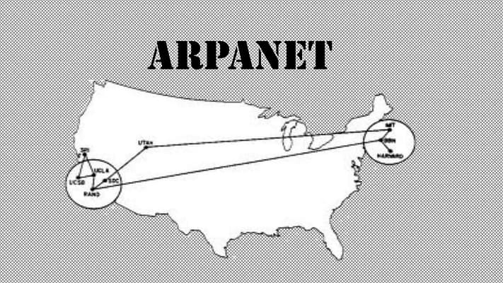

Iniciou na década de 1960, impulsionado pela necessidade de compartilhar poder computacional, que na época era restrito a grandes mainframes (máquinas centralizadas), e por questões estratégicas da Guerra Fria.

Criada em 1969, foi uma das principais origens da internet. A primeira mensagem foi para o Stanford Research Institute, tentando enviar a palavra LOGIN, chegaram só as letras LO.
A adoção do TCP/IP em 1983 consolida a internet como uma rede de redes. A partir disso, redes diferentes passam a se interconectar usando um conjunto comum de protocolos. O IPv4 utiliza endereços de 32 bits, permitindo 232 combinações possíveis.
Domain Name System surgiu em 1983 e funciona como uma agenda telefônica da internet, traduzindo nomes de domínio, como google.com, em endereços IP, facilitando a localização dos sites.
Em 1989 Tim Berners-Lee havia proposto um sistema de hipertexto para compartilhar informações científicas, que originaria a World Wide Web. Em 1994, Tim Berners-Lee funda o W3C (World Wide Web Consortium), para coordenar padrões abertos da Web.
Em 1990-1991 surgem os elementos fundamentais da WEB: HTML, URL, HTTP. O primeiro navegador e o primeiro servidor WEB.
Hypertext Transfer Protocol é um protocolo utilizado para permitir a comunicação entre o navegador e o servidor Web, possibilitando o acesso às páginas e aos conteúdos da Internet.
O navegador é um programa utilizado para acessar e visualizar páginas da Web. Exemplos de navegadores são Google Chrome, Mozilla Firefox, Microsoft Edge e Safari.

O servidor Web é um computador ou software responsável por armazenar e disponibilizar páginas e conteúdos para os navegadores por meio da Internet.
A Web 1.0 era baseada em páginas estáticas e de leitura exclusiva (somente leitura), enquanto as aplicações Web modernas - Web 2.0 e além, funcionam como softwares dinâmicos, interativos e centrados na colaboração em tempo real.
| Ano | Acontecimento | Importância |
|---|---|---|
| 1969 | Criação da ARPANET | Uma das origens da Internet. |
| 1983 | Adoção do TCP/IP | Permitiu a comunicação entre diferentes redes. |
| 1983 | Criação do DNS | Facilitou a localização de sites por nomes. |
| 1989 | Proposta da World Wide Web | Deu origem à Web como conhecemos. |
| 1990 | Desenvolvimento do HTML | Possibilitou estruturar páginas da Web. |
| 1991 | Disponibilização da Web ao público | Expandiu o acesso à Web. |
| Total de acontecimentos: 6 | ||
Segundo o CERN, Tim Berners-Lee inventou a World Wide Web em 1989, enquanto trabalhava na organização. Essa criação transformou a maneira como as pessoas compartilham e acessam informações pela Internet.
Consulte os sites abaixo para conhecer mais sobre a história da Internet e da Web: